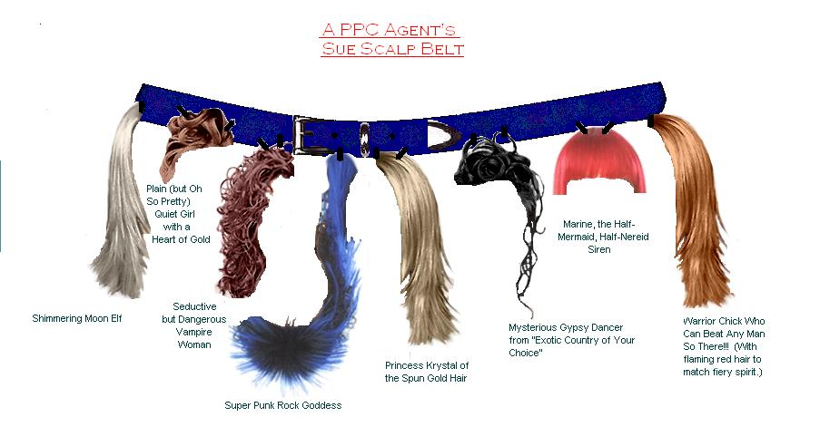
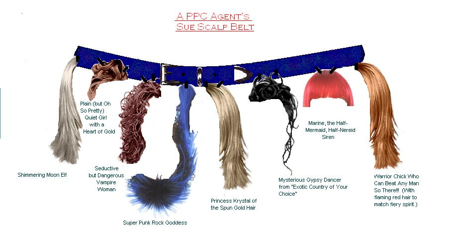
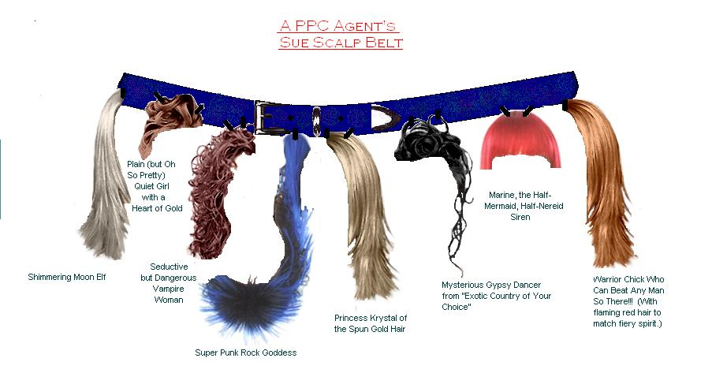

For more information on the 'Sues scalped here, or to obtain a scalp belt of your own, contact Agent Isaiah at the Department of Technical Errors:
The Red Pen Files
::
Back to Handbook Index
::
 
